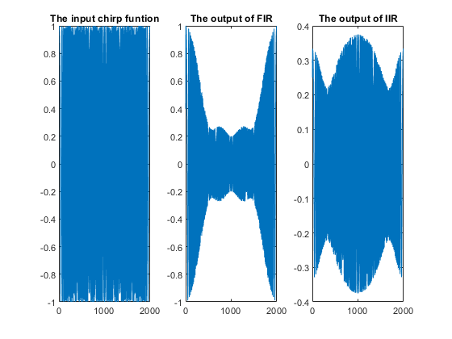

close all, clear all, clc;
n = [0:1:200];
X = cos((0.1)*pi*n) + cos((0.5)*pi*n) + cos((0.9)*pi*n);
A = 1;
B = [0.4 0.3 0.2 0.1 ];
y1 = filter(B,A,X);
figure(1);
stem(n,X);
title('The input signal x[n]');
figure(2);
stem(n,y1);
title('FIR filter output');
B2 = [0.3 -0.2 0.1];
A2 = [1 -0.5 0.1];
y2 = filter(B2,A2,X);
figure(3);
stem(n,y2);
title('IIR filter output');
figure(4);
ft1 = fftshift(fft(y1));
plot([-pi:pi/100:pi],abs(ft1))
title('FFT of output of FIR');
xlabel('radian');
ylabel('magnitude');
figure(5);
ft2 = fftshift(fft(y2));
plot([-pi:pi/100:pi],abs(ft2))
title('FFT of output of IIR');
xlabel('radian');
ylabel('magnitude');
figure(6);
impulse = impz(B,A,50);
stem(impulse,'o')
title('Impluse response of FIR');
figure(7);
impulse2 = impz(B2,A2,50);
stem(impulse2,'o');
title('Impluse response of IIR');
figure(8);
fft_im1 = fftshift(fft(impulse));
plot([-pi:pi/25:pi-pi/25],abs(fft_im1));
title('FFT of the Impluse response FIR');
xlabel('radian');
ylabel('magnitude');
figure(9);
fft_im2 = fftshift(fft(impulse2));
plot([-pi:pi/25:pi-pi/25],abs(fft_im2));
title('FFT of the Impluse response IIR');
xlabel('radian');
ylabel('magnitude');
t = [0:1/1e3:2];
chirp = chirp(t,0,2,1000);
figure();
chirp1_out = filter(B,A,chirp);
chirp2_out = filter(B2,A2,chirp);
subplot(1,3,1);
plot(chirp);
title('The input chirp funtion');
subplot(1,3,2);
plot(chirp1_out);
title('The output of FIR');
subplot(1,3,3);
plot(chirp2_out);
title('The output of IIR');
figure;
ftX = fftshift(fft(X));
plot([-pi:pi/100:pi],abs(ftX))
title('FFT of x[n]');
xlabel('radian');
ylabel('magnitude');

